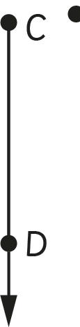
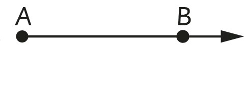
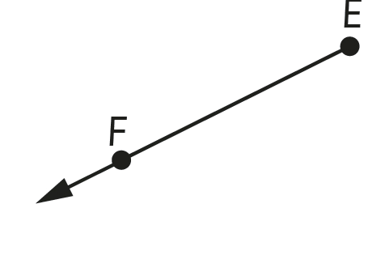

A ray
A ray is a line with a fixed starting point but has no end point. A ray is formed when a line segment is drawn and extended at one of its end points and marked with an arrow. Examples of rays are as shown in the following diagram:


